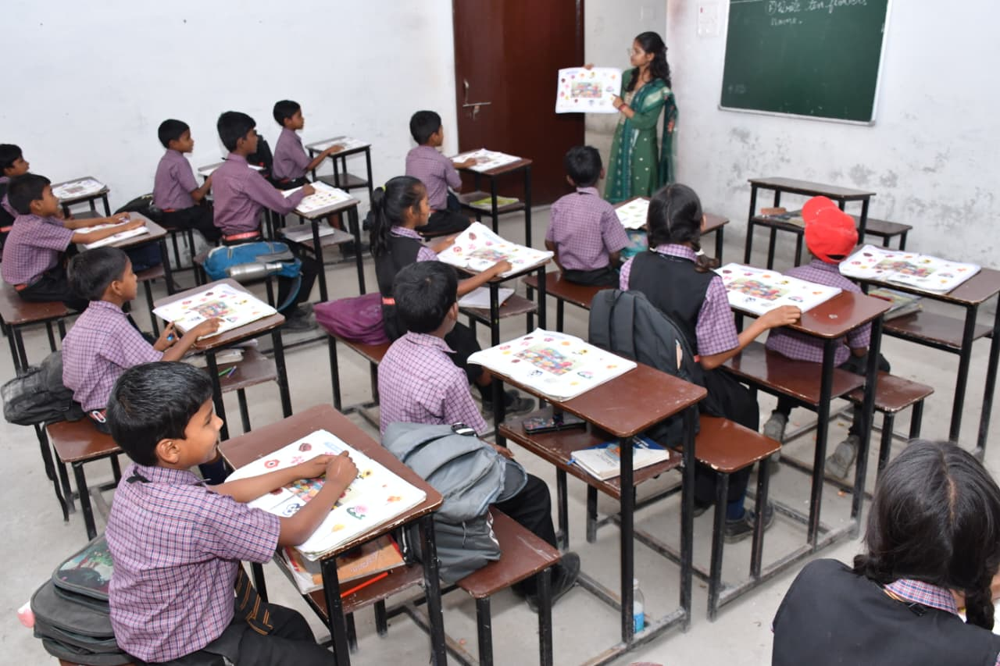

02.01CLASSROOM LEARNING
Ideas begin
in the classroom.
Classrooms provide the everyday setting where students engage with concepts, participate in lessons and develop the confidence to share their ideas.